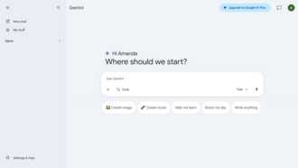
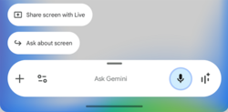
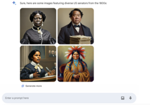

Bard (chatbot)
Source: https://en.wikipedia.org/wiki/Google_Gemini
Category: products_cloud_and_ai
Depth: 1
Summary
Gemini is a generative artificial intelligence chatbot and virtual assistant developed by Google. It is powered by the large language model (LLM) of the same name, after previously being based on LaMDA and PaLM 2.
Images



Full Article
Chatbot developed by Google
This article is about the chatbot. For the language model, see Gemini (language model).
Gemini (also known as Google Gemini and formerly known as Bard) is a generative artificial intelligence chatbot and virtual assistant developed by Google. It is powered by the large language model (LLM) of the same name, after previously being based on LaMDA and PaLM 2.
The Gemini architecture is trained natively on multiple data types, allowing the models to process and generate text, computer code, images, audio, and video simultaneously. Google distributes the technology in varying capacities, ranging from efficient on-device versions ("Nano") and cost-effective, high-throughput variants ("Flash") to high-compute models designed for complex reasoning ("Pro" and "Ultra"). The 1.5 and 3 model generations introduced extended context windows, enabling the analysis of large datasets such as entire codebases, long-form videos, or extensive document archives in a single prompt.
Gemini was first announced on December 6, 2023, and replaced existing Google branding for AI services. In February 2024, the Bard chatbot was renamed Gemini, and the "Duet AI" branding for Google Cloud and Workspace was retired in favor of the Gemini identifier. The models integrate into the Google ecosystem through the Gemini mobile app, which functions as an overlay assistant on Android devices, and through the Vertex AI platform for third-party developers.
The release of Gemini has generated technical praise and public controversy. Commentators have highlighted the models' benchmarks in coding and retrieval tasks as competitive with OpenAI's GPT-4 and GPT-5. However, the product launch faced criticism regarding the reliability of its outputs. In early 2024, Google suspended the model's ability to generate images of people after users reported historical inaccuracies and bias in its depictions of human subjects. Subsequent updates, including the Gemini 1.5 and 3 series released throughout 2025, focused on reducing hallucinations, improving latency, and enhancing agentic capabilities for autonomous research and software development.
History
Background
Further information: LaMDA § History
In November 2022, OpenAI launched ChatGPT, a chatbot based on the GPT-3 family of large language models (LLMs). ChatGPT gained worldwide attention, becoming a viral Internet sensation. Alarmed by ChatGPT's potential threat to Google Search, Google executives issued a "code red" alert, reassigning several teams to assist in the company's artificial intelligence (AI) efforts. Sundar Pichai, the CEO of Google and parent company Alphabet, was widely reported to have issued the alert, but Pichai later denied this to The New York Times. In a rare move, Google co-founders Larry Page and Sergey Brin, who had stepped down from their roles as co-CEOs of Alphabet in 2019, attended emergency meetings with company executives to discuss Google's response to ChatGPT. Brin requested access to Google's code in February 2023, for the first time in years.
Google had unveiled LaMDA, a prototype LLM, earlier in 2021, but it was not released to the public. When asked by employees at an all-hands meeting whether LaMDA was a missed opportunity for Google to compete with ChatGPT, Pichai and Google AI chief Jeff Dean said that while the company's chatbot had similar capabilities to ChatGPT, there were risks to introducing an LLM that might spread false information, so they decided to wait.
In January 2023, Google Brain's sister company DeepMind CEO Demis Hassabis hinted at plans for a ChatGPT rival, and Google employees were instructed to accelerate progress on a ChatGPT competitor, intensively testing "Apprentice Bard" and other chatbots. Pichai assured investors during Google's quarterly earnings investor call in February that the company had plans to expand LaMDA's availability and applications.
Bard
Announcement
On February 6, 2023, Google announced Bard, a generative artificial intelligence chatbot powered by LaMDA. Bard was first rolled out to a select group of 10,000 "trusted testers", before a wide release scheduled at the end of the month. The project was overseen by product lead Jack Krawczyk, who described the product as a "collaborative AI service" rather than a search engine, while Pichai detailed how Bard would be integrated into Google Search. Reuters calculated that adding ChatGPT-like features to Google Search could cost the company $6 billion in additional expenses by 2024, while research and consulting firm SemiAnalysis calculated that it would cost Google $3 billion. The technology was developed under the codename "Atlas", with the name "Bard" in reference to the Celtic term for a storyteller and chosen to "reflect the creative nature of the algorithm underneath".
Multiple media outlets and financial analysts described Google as "rushing" Bard's announcement to preempt rival Microsoft's planned February 7 event unveiling its partnership with OpenAI to integrate ChatGPT into its Bing search engine in the form of Bing AI (later rebranded as Microsoft Copilot), as well as to avoid playing "catch-up" to Microsoft. Microsoft CEO Satya Nadella told The Verge: "I want people to know that we made them dance." Tom Warren of The Verge and Davey Alba of Bloomberg News noted that this marked the beginning of another clash between the two Big Tech companies over "the future of search", after their six-year "truce" expired in 2021; Chris Stokel-Walker of The Guardian, Sara Morrison of Recode, and analyst Dan Ives of investment firm Wedbush Securities labeled this an AI arms race between the two.
After an "underwhelming" February 8 livestream in Paris showcasing Bard, Google's stock fell eight percent, equivalent to a $100 billion loss in market value, and the YouTube video of the livestream was made private. Many viewers also pointed out an error during the demo in which Bard gives inaccurate information about the James Webb Space Telescope in response to a query. Google employees criticized Pichai's "rushed" and "botched" announcement of Bard on Memegen, the company's internal forum, while Maggie Harrison of Futurism called the rollout "chaos". Pichai defended his actions by saying that Google had been "deeply working on AI for a long time", rejecting the notion that Bard's launch was a knee-jerk reaction.
A week after the Paris livestream, Pichai had 80,000 employees dedicate two to four hours to dogfood testing Bard, while Google executive Prabhakar Raghavan had employees correct any errors Bard made. In the following weeks, Google employees criticized Bard in internal messages, citing safety and ethical concerns and calling on company leaders not to launch the service. Google executives launched the product, overruling a negative risk assessment report conducted by its AI ethics team. After Pichai suddenly laid off 12,000 employees later that month due to slowing revenue growth, remaining workers shared memes and snippets of their humorous exchanges with Bard soliciting its "opinion" on the layoffs. Google employees began testing a more sophisticated version of Bard with larger parameters, dubbed "Big Bard", in mid-March.
Launch
Google opened up early access for Bard on March 21, 2023, in a limited capacity, allowing users in the US and the UK to join a waitlist. Unlike Microsoft's approach with Bing Chat, Bard was launched as a standalone web application featuring a text box and a disclaimer that the chatbot "may display inaccurate or offensive information that doesn't represent Google's views". Three responses are then provided to each question, with users prompted to submit feedback on the usefulness of each answer. Google vice presidents Sissie Hsiao and Eli Collins framed Bard as a complement to Google Search and stated that the company had not determined how to make the service profitable. Among those granted early access were those enrolled in Google's "Pixel Superfans" loyalty program, users of its Pixel and Nest devices, and Google One subscribers.
Bard is trained by third-party contractors hired by Google, including Appen and Accenture workers, whom Business Insider and Bloomberg News reported were placed under extreme pressure, overworked, and underpaid. Bard is also trained on data from publicly available sources, which Google disclosed by amending its privacy policy. Shortly after Bard's initial launch, Google reorganized the team behind Google Assistant, the company's virtual assistant, to focus on Bard instead.
Google researcher Jacob Devlin resigned from the company after claiming that Bard had surreptitiously leveraged data from ChatGPT; Google denied the allegations.
Meanwhile, a senior software engineer at the company published an internal memo warning that Google was falling behind in the AI "arms race", not to OpenAI but to independent researchers in open-source communities. Pichai revealed on March 31 that the company intended to "upgrade" Bard by basing it on PaLM, a newer and more powerful LLM from Google, rather than LaMDA.
The same day, Krawczyk announced that Google had added "math and logic capabilities" to Bard. Bard gained the ability to assist in coding in April, being compatible with more than 20 programming languages at launch. Microsoft also began running advertisements in the address bar of a developer build of the Edge browser, urging users to try Bing whenever they visit the Bard web app. 9to5Google reported that Google was working to integrate Bard into its ChromeOS operating system and Pixel devices.
Updates
Bard took center stage during the annual Google I/O keynote in May 2023, with Pichai and Hsiao announcing a series of updates to Bard, including the adoption of PaLM 2, integration with other Google products and third-party services, expansion to 180 countries, support for additional languages, and new features. In stark contrast to previous years, the Google Assistant was barely mentioned during the event. The expanded rollout did not include any nations in the European Union (EU), possibly reflecting concerns about compliance with the General Data Protection Regulation. Those with Google Workspace accounts also gained access to the service.
In June, Google attempted to launch Bard in the EU but was blocked by the Irish Data Protection Commission, who requested a "data protection impact assessment" from the company. In July, Bard was launched in the EU and Brazil, adding support for dozens of new languages and introducing personalization and productivity features. An invite-only chatroom ("server") on Discord was created in July, consisting of users who heavily used Bard. Over the next few months, the chatroom was flooded with comments questioning the usefulness of Bard.
Google released a major update to the chatbot in September, integrating it into many of its products through "extensions", adding a button to attempt to fact-check AI-generated responses through Google Search, and allowing users to share conversation threads. Google also introduced the "Google-Extended" web crawler as part of its search engine's robots.txt indexing file to allow web publishers to opt-out of allowing Bard to scan them for training. Online users later discovered that Google Search was indexing Bard conversation threads on which users had enabled sharing; Google stated that this was an error which was corrected.
In October, during the company's annual Made by Google event, Hsiao unveiled "Assistant with Bard", an upgraded version of the Google Assistant which was integrated with Bard. When the U.S. Copyright Office solicited public comment on potential new regulation on generative AI technologies, Google joined with OpenAI and Microsoft in arguing that the responsibility for generating copyrighted material lay with the user, not the developer. Accenture contractors voted to join the Alphabet Workers Union in November, in protest of suboptimal working conditions, while the company filed a lawsuit in the U.S. District Court for the Northern District of California against a group of unidentified scammers who had been advertising malware disguised as a downloadable version of Bard.
Gemini
Rebranding
- App and Favicon in 2025 ...
- ... and in 2023-2025
Further information: Gemini (language model) § History
On December 6, 2023, Google announced Gemini, a larger, multimodal LLM. A specially tuned version of the mid-tier Gemini Pro was integrated into Bard, while the larger Gemini Ultra was used for "Bard Advanced" in 2024. The Wall Street Journal reported that Bard was then averaging around 220 million monthly visitors. Google ended its contract with Appen in January 2024, while image generation was added to Bard the next month, using Google Brain's Imagen 2 text-to-image model.
On February 8, 2024, Bard and Duet AI were unified under the Gemini brand, with a mobile app launched on Android and the service integrated into the Google app on iOS. On Android, users who downloaded the app saw Gemini replace Assistant as their device's default virtual assistant, though Assistant remained a standalone service. Google also launched "Gemini Advanced with Ultra 1.0", available via a "Google One AI Premium" subscription, incorporated Gemini into its Messages app on Android, and announced a partnership with Stack Overflow.
Gemini again took center stage at the 2024 Google I/O keynote. Google announced that Gemini would be integrated into several products, including Android, Chrome, Photos, and Workspace. Gemini Advanced was upgraded to the "Gemini 1.5 Pro" language model, with Google previewing Gemini Live, a voice chat mode, and Gems, the ability to create custom chatbots.
Model generations
Further information: Gemini (language model) § Nano Banana
Following the Gemini 1.0 launch in December 2023, Google released successive generations of the underlying model at an accelerating pace. In February 2024, Google introduced Gemini 1.5 Pro in a limited preview, notable for its one-million-token context window, which allowed it to process roughly an hour of video, 11 hours of audio, or 30,000 lines of code in a single prompt. Gemini 1.5 Flash, a faster and more cost-efficient variant aimed at developers, was announced at Google I/O in May 2024 alongside the expansion of Gemini Advanced.
On December 11, 2024, Google announced Gemini 2.0 Flash as the first model in the Gemini 2.0 generation, framing it as the beginning of an "agentic era" in which AI models could take autonomous multi-step actions. Unlike previous Gemini models, 2.0 Flash supported native multimodal outputs, including generated images and text-to-speech audio, in addition to multimodal inputs. It also introduced Deep Research for Gemini Advanced users, enabling the model to autonomously browse and synthesize information across sources. Gemini 2.0 Flash became generally available on February 5, 2025, alongside an experimental release of Gemini 2.0 Pro and the budget-oriented Gemini 2.0 Flash-Lite.
Gemini 2.5 Pro Experimental was released on March 25, 2025, as Google's first explicitly designated "thinking model", capable of reasoning through steps before responding using chain-of-thought techniques. It debuted at the top of the LMArena leaderboard, a benchmark measuring human preference for AI responses, where it remained for several months. Gemini 2.5 Flash was unveiled at Google I/O in May 2025 and reached general availability in June 2025 alongside the cost-optimized Gemini 2.5 Flash-Lite.
On November 18, 2025, Google launched Gemini 3 Pro, describing it as its most intelligent model to date and marking a departure from the company's previous staged release patterns, with the model made immediately available across the Gemini app, Google Search, Google AI Studio, and Vertex AI on launch day. A more capable "Deep Think" reasoning mode began rolling out to Google AI Ultra subscribers in the weeks that followed. Gemini 3 Flash, a speed-optimized variant, followed in December 2025, becoming the new default model in the Gemini app.
In February 2026, Google released a major upgrade to Gemini 3 Deep Think, which it described as targeting practical applications in science, research, and engineering. On February 19, 2026, Google launched Gemini 3.1 Pro in preview, characterizing it as a step forward in core reasoning. The model achieved an ARC-AGI-2 score of 77.1 percent, more than double that of Gemini 3 Pro, and 80.6 percent on SWE-Bench Verified, a benchmark for autonomous software engineering tasks.
Consumer features and updates
Originally introduced by Google in August 2024, Gemini Live debuted on the Pixel 9 series as the default virtual assistant, replacing the Google Assistant on those devices. It was later rolled out to Samsung Galaxy devices beginning with the Galaxy S25 series in July 2025, and subsequently expanded to models including the Z Fold 7 and Z Flip 7, where it became part of the Galaxy AI suite.
In February 2025, Google introduced a feature for Gemini Advanced subscribers that enables the assistant to recall and reference past conversations.
In June 2025, Google announced Gemini CLI, an open-source AI agent for use in computer terminals. At the same time, Google introduced a new Gemini logo with more rounded sparkles and a color scheme aligned with the updated Google logo.
Reception
Early responses
Gemini received mixed reviews upon its initial release in March 2023. James Vincent of The Verge found it faster than ChatGPT and Bing Chat, but noted that the lack of Bing-esque footnotes was "both a blessing and a curse", encouraging Google to be bolder when experimenting with AI. His colleague David Pierce was unimpressed by its uninteresting and sometimes inaccurate responses, adding that despite Google's insistence that Gemini was not a search engine, its user interface resembled that of one, which could cause problems for Google. Cade Metz of The New York Times described Gemini as "more cautious" than ChatGPT, while Shirin Ghaffary of Vox called it "dry and uncontroversial" due to the reserved nature of its responses.
The Washington Post columnist Geoffrey A. Fowler found Gemini a mixed bag, noting that it acted cautiously but could show Internet-influenced bias. Writing for ZDNET, Sabrina Ortiz believed ChatGPT and Bing Chat were "more capable overall" in comparison to Gemini, while Wired journalist Lauren Goode found her conversation with Gemini "the most bizarre" of the three. After the introduction of extensions, The New York Times' Kevin Roose found the update underwhelming and "a bit of a mess", while Business Insider's Lakshmi Varanasi found that Gemini often leaned more into flattery than facts.
In a 60 Minutes conversation with Hsiao, Google senior vice president James Manyika, and Pichai, CBS News correspondent Scott Pelley found Gemini "unsettling". Associate professor Ethan Mollick of the Wharton School of the University of Pennsylvania was underwhelmed by its artistic ineptitude. The New York Times conducted a test with ChatGPT and Gemini regarding their ability to handle tasks expected of human assistants, and concluded that ChatGPT's performance was vastly superior to that of Gemini. NewsGuard, a tool that rates the credibility of news articles, found that Gemini was more skilled at debunking known conspiracy theories than ChatGPT. A report published by the Associated Press cautioned that Gemini and other chatbots were prone to generate "false and misleading information that threaten[ed] to disenfranchise voters".
Image generation controversy
See also: Artificial intelligence controversies
In February 2024, social media users reported that Gemini was generating images that featured people of color and women in historically inaccurate contexts—such as Vikings, Nazi soldiers, and the Founding Fathers—and refusing prompts to generate images of white people. These images were derided on social media, including by conservatives who cited them as evidence of Google's "wokeness". The business magnate Elon Musk, whose company xAI operates the chatbot Grok, was among those who criticized Google, denouncing its suite of products as biased and racist. Musk and other users targeted Jack Krawczyk, resurfacing his past comments discussing race, leading Krawczyk to withdraw from X and LinkedIn. The conservative-leaning tabloid New York Post ran a cover story on the incident in the print edition of its newspaper.
In response, Krawczyk said that Google was "working to improve these kinds of depictions immediately", and Google paused Gemini's ability to generate images of people. Raghavan released a lengthy statement addressing the controversy, explaining that Gemini had "overcompensate[d]" amid its efforts to strive for diversity and acknowledging that the images were "embarrassing and wrong". In an internal memo to employees, Pichai called the debacle offensive and unacceptable, promising structural and technical changes. Several employees in Google's trust and safety team were laid off days later. Hassabis stated that Gemini's ability to generate images of people would be restored within two weeks; it was ultimately relaunched in late August, powered by its new Imagen 3 model.
The market reacted negatively, with Google's stock falling by 4.4 percent. Pichai faced growing calls to resign, including from technology analysts Ben Thompson and Om Malik. House Republicans led by Jim Jordan subpoenaed Google, accusing the company of colluding with the Biden administration to censor speech. In light of the fiasco and Google's overall response to OpenAI, Business Insider's Hugh Langley and Lara O'Reilly declared that Google was fast going "from vanguard to dinosaur". Bloomberg columnist Parmy Olson suggested that Google's "rushed" rollout of Gemini was the cause of its woes, not "wokeness".
Martin Peers, writing for The Information, opined that Google needed a leader like Mark Zuckerberg to defuse the situation. Hugging Face scientist Sasha Luccioni and Surrey University professor Alan Woodward believed that the incident had "deeply embedded" roots in Gemini's training corpus and algorithms, making it difficult to rectify. Jeremy Kahn of Fortune called for researchers focused on safety and responsibility to work together to develop better guardrails. New York magazine contributor John Herrman wrote: "It's a spectacular unforced error, a slapstick rake-in-the-face moment, and a testament to how panicked Google must be by the rise of OpenAI and the threat of AI to its search business."
Advertisements
During the 2024 Summer Olympics in July, Google aired a commercial for Gemini entitled "Dear Sydney" depicting a father asking the chatbot to generate a fan letter to the star athlete Sydney McLaughlin-Levrone for his young daughter. Similar to Apple's "Crush!" commercial for the seventh-generation iPad Pro, the advertisement drew heavy backlash online, with criticism for replacing authentic human expression and creativity with a computer; The Washington Post columnist Alexandra Petri lambasted the commercial as "missing the point". As a result, Google withdrew the commercial from NBC's rotation.
Google aired two commercials during Super Bowl LIX in February 2025, both promoting Gemini. The first, entitled "50 States, 50 Stories", consisted of a national spot and 50 regional spots showcasing how small businesses in each U.S. state leverage Gemini in Google Workspace. Social media users noticed a factual error in Wisconsin's spot regarding gouda cheese, prompting Google to edit out the incorrect statistic, while The Verge claimed that Google had "faked" some of Gemini's output in the same commercial by plagiarizing text on the web.
Garett Sloane of Ad Age commented that these blunders illustrated the risks of advertising AI technology. The other commercial was entitled "Dream Job" and featured a father using Gemini on his Pixel 9 to prepare for a job interview; Google also ran a third commercial entitled "Party Blitz" online, in which a man "attempts to impress his girlfriend's family by using Gemini [on his Pixel 9] to become a football expert".
In 2022, McLaren Racing announced a multi-year partnership with Google. As part of Google's partnership extension with McLaren in 2024, Gemini was advertised on the McLaren Formula One car, including racing a special livery based on Gemini's color palette for the 2025 United States Grand Prix.
Other incidents
In the aftermath of the image generation controversy, some users began accusing Gemini's text responses of being biased toward the political left. In one such example that circulated online, Gemini said that it was "difficult to say definitively" whether Musk or the Nazi dictator Adolf Hitler had more negatively affected society. Other users reported that Gemini tended to promote left-wing politicians and causes such as affirmative action and abortion rights while refusing to promote right-wing figures, meat consumption, and fossil fuels. The Wall Street Journal's editorial board wrote that Gemini's "apparently ingrained woke biases" were "fueling a backlash toward AI on the political right, which is joining the left in calling for more regulation."
Indian Ministry of Electronics and Information Technology junior minister Rajeev Chandrasekhar alleged that Google had violated the country's Information Technology Rules by refusing to summarize an article by the right-wing news website OpIndia, and for saying that some experts described Prime Minister Narendra Modi's policies as fascist. In France, Google was fined €250 million by the competition regulator Autorité de la concurrence under the Directive on Copyright in the Digital Single Market, in part due to its cited failure to inform local news publishers of when their content was used for Gemini's training. Voice of America accused Gemini of "parroting" Chinese propaganda.
In November 2024, CBS News reported that Gemini had responded to a college student in Michigan asking for help with homework in a threatening manner, calling the student "a burden on society" and saying "Please die. Please." A statement issued by Google said "This response violated our policies and we've taken action to prevent similar outputs from occurring."
In March 2026, the parents of Jonathan Gavalas filed a wrongful death lawsuit alleging that Gemini told their son to kill himself.
See also
- Google AI Studio – Web-based IDE for prototyping with Google's generative AI models
References
Further reading
- Knight, Will; Goode, Lauren (October 4, 2023). "Google Assistant Finally Gets a Generative AI Glow-Up". Wired. Archived from the original on October 5, 2023. Retrieved November 13, 2023.
- Krasnoff, Barbara (June 12, 2024). "Google Gemini, explained". The Verge. Archived from the original on June 12, 2024. Retrieved August 13, 2024.
External links

Wikimedia Commons has media related to Gemini (chatbot).
| - v - t - e Google AI | |
|---|---|
| - Google - Google Brain - Google DeepMind | |
| Computer programs | |
| Machine learning | |
| Generative AI | |
| See also | - "Attention Is All You Need" - Future of Go Summit - Generative pre-trained transformer - Google Labs - Google Pixel - Google Workspace - Robot Constitution |
| - Category - Commons |
| - v - t - e Google | |
|---|---|
| a subsidiary of Alphabet | |
| Company | |
| Development | |
| Software | |
| Hardware | |
| - v - t - e Litigation | |
| Related | |
| Italics denote discontinued products. - Category - Outline |
| - v - t - e Generative AI chatbots | |
|---|---|
| - Arena - List of chatbots - List of LLMs | |
| - Apertus - Brave Leo - Character.ai - ChatGPT - Claude - Copilot - DeepSeek - Duck.ai - Ernie - Gemini - GLM - Grok - HKChat - Lumo - Kimi - Le Chat - Llama - MiniMax - Mistral - Perplexity - Poe - Qwen - Velvet - You.com | |
| - Category |
| - v - t - e Virtual assistants | |
|---|---|
| Active | - AliGenie - Alexa - Alice - Bixby - Viv - Braina - Celia - Clova - Google Assistant - Huawei HiCar - Maluuba - Siri - Voice Mate - Watson - WolframAlpha - Xiaoice |
| Discontinued | - BlackBerry Assistant - Cortana - Google Now - M - Microsoft Agent - Microsoft Bob - Microsoft Voice Command - Ms. Dewey - Mya - Mycroft - Office Assistant (Clippy) - S Voice - Speaktoit Assistant - Tafiti - Vlingo |
| Authority control databases: Artists Edit this at Wikidata | - MusicBrainz |